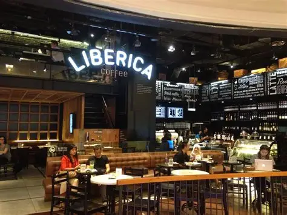
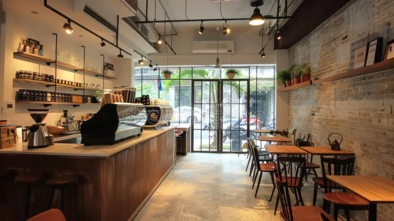

Iloilo Arabica
Rich, aromatic beans grown in the highlands. Perfect for filter coffee or espresso.
Flavor Notes: Chocolate, floral, medium acidity

Iloilo Robusta
Strong, earthy beans ideal for espresso or bold brews.
Flavor Notes: Nutty, chocolatey, full-bodied

Coffea Liberica
Rare beans grown in select Iloilo farms. Smooth but unique in taste.
Flavor Notes: Fruity, smoky, complex

Barako Blend
A traditional blend of Arabica and Robusta for bold flavor.
Flavor Notes: Earthy, bold, rich crema

Specialty Blend
Hand-picked beans roasted in small batches to highlight local flavors.
Flavor Notes: Sweet, caramel, balanced

Iloilo Excelsa
Unique tangy beans with a hint of tartness, rare in local farms.
Flavor Notes: Fruity, tart, medium body